Once marcas, un solo aliado para su proyecto en México
Mobiliti representa a fabricantes de mobiliario, pisos, recubrimientos, acústica y vidrio solar, e importa sus productos para proyectos corporativos, hoteleros y residenciales. Aquí encontrará lo más relevante de cada marca, revisado en sus catálogos y en sus sitios oficiales.
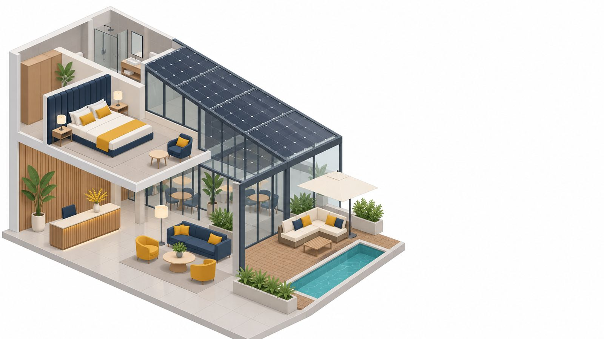
Índice de marcas
Mobiliario
Pisos y recubrimientos
Fachadas y exteriores
Mobiliario
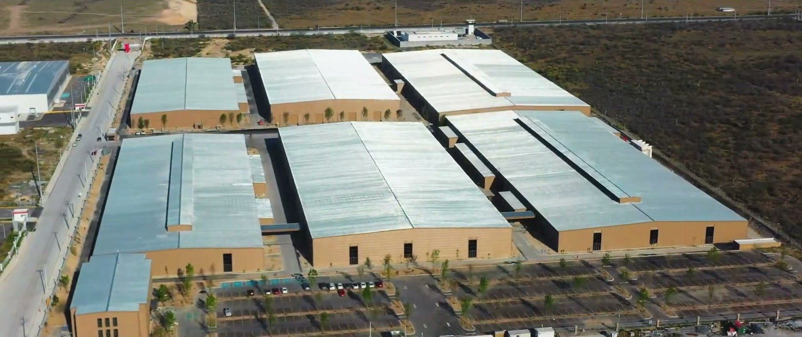
Sunon
Mobiliario corporativo y residencial
Mobiliario corporativo con planta propia en Nuevo León
Sunon fabrica mobiliario de oficina desde 1991 en Hangzhou, China, y cuenta con más de 50 centros de experiencia en el mundo. Su portafolio cubre sillería, escritorios de altura ajustable, estaciones de trabajo, mesas, almacenaje, cabinas acústicas y una línea para residencias estudiantiles y departamentos. Desde 2024 también produce en México, en su planta de Salinas Victoria, Nuevo León.
Fortalezas
- Clientes globales: Google, Amazon, Alibaba, Coca-Cola, WeWork, Ford, PepsiCo y Heineken.
- Energía solar: unos 11.14 millones de kWh al año; evita unas 4,779 t de CO₂.
- Plantas en Xiaoshan, Haining, Qiantang y Hebei; la de Hebei mide 408,000 m².
- Premios de diseño iF, Red Dot, German Design Award y Good Design en sillas como H5.
- Centros de I+D en Hangzhou, Berlín y Los Ángeles; unas 10 series nuevas al año.
Productos destacados
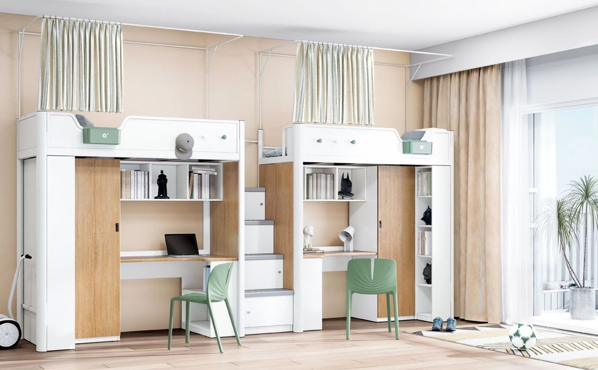
Y01
Litera alta con escritorio, clóset de 84 cm y escalera-cajonera con peldaños luminiscentes
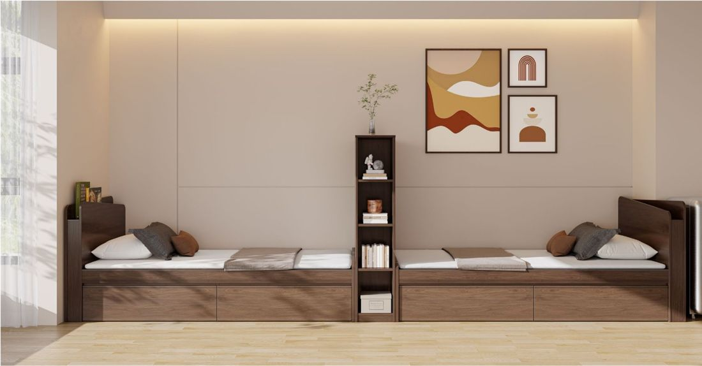
Y02
Serie para departamentos: cama con cajonera, gabinete divisor y escritorio con tablero perforado magnético
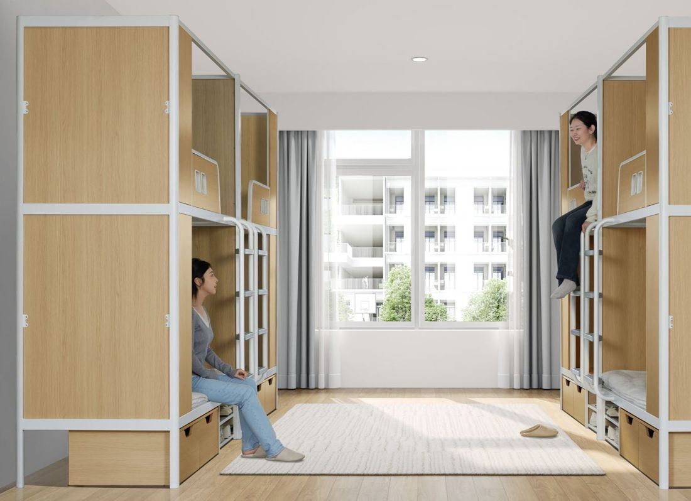
Y03
Literas tipo cápsula de dos niveles con paneles de privacidad y cajones bajo cama
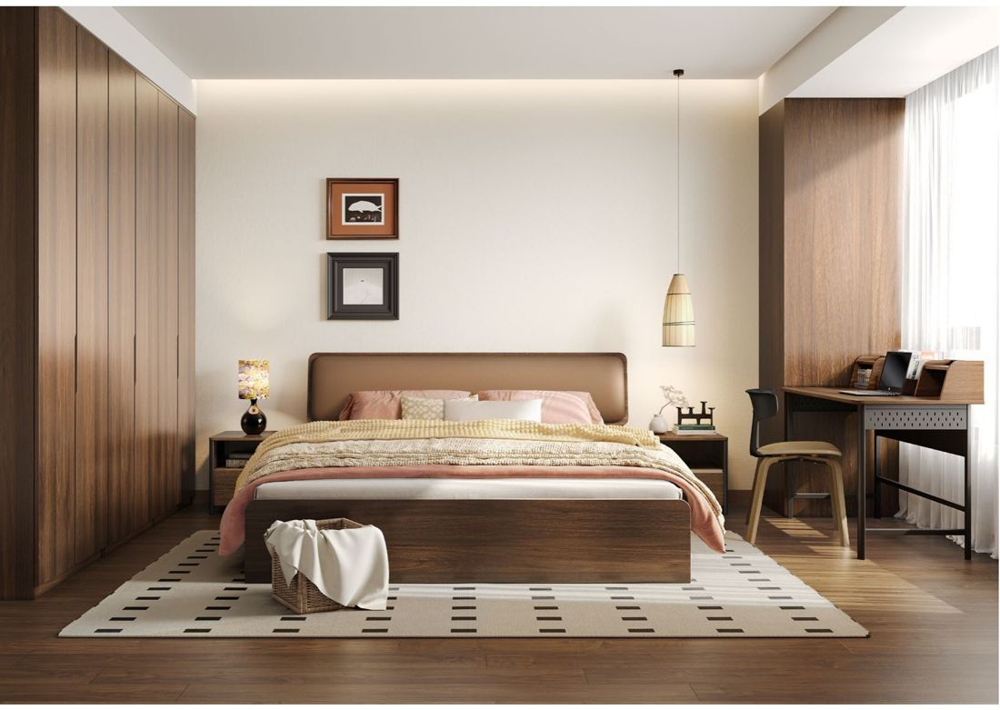
Y-GRAND
Recámara en tono madera con cabecera tapizada, buró, roperos, mueble de TV y escritorio
Otras líneas
- Silla H5. Silla de oficina premiada con plástico reciclado de redes de pesca; 76% menos emisiones de carbono, según Sunon
- Escritorios y estaciones de trabajo. Escritorios de altura ajustable, de oficina privada y estaciones en bancada para áreas operativas y directivas
Proyectos de referencia
Proyectos publicados por la marca
- WeWork: más de 400,000 escritorios, sillas y pedestales Varios países
- Husky Oil Canadá
- Proyecto de transporte de Sharjah (entregado en 2012) Sharjah, Emiratos Árabes Unidos
- Oficinas globales de Monolithic Power Systems Varios países
Fuentes
- Catálogo Sunon de mobiliario para residencias estudiantiles y departamentos, p. 5
- Catálogo Sunon de mobiliario para residencias estudiantiles y departamentos, p. 7
- Catálogo Sunon de mobiliario para residencias estudiantiles y departamentos, pp. 20–22
- Catálogo Sunon de mobiliario para residencias estudiantiles y departamentos, pp. 29–30
- Catálogo Sunon de mobiliario para residencias estudiantiles y departamentos, p. 34
- Catálogo Sunon de mobiliario para residencias estudiantiles y departamentos, p. 42
- Video corporativo Sunon México: planta y centro de experiencia
- www.sunonglobal.com
- www.sunonglobal.com
- www.sunonglobal.com
- www.sunonglobal.com
- www.sunonglobal.com
- www.sunonglobal.com
- www.sunonglobal.com
- officeinsight.com
- kr-asia.com
- prnewswire.com
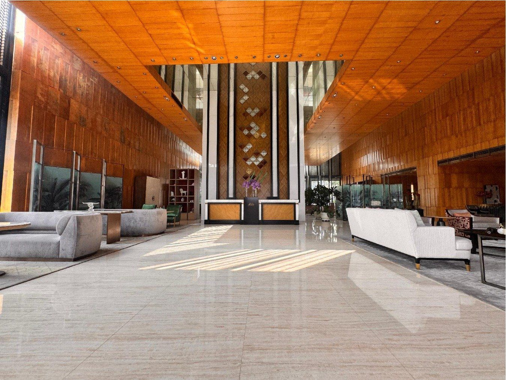
YABO Hotel Furniture
Mobiliario a la medida para hotelería
Habitaciones y áreas públicas para hoteles de cinco estrellas
Guangdong Yabo Furniture Industry fabrica desde 1999 mobiliario a la medida para hoteles, departamentos, villas y clubes. En su planta de Nanhai, Foshan, trabaja con maquinaria importada y acabado UV. Ha amueblado hoteles en Asia, Medio Oriente, África y Oceanía. Para un proyecto en México, resuelve todo el mobiliario del hotel con un solo fabricante.
Fortalezas
- Proveedor de Marriott, Hilton, Accor, Hyatt, Wyndham y Banyan Tree
- Amuebló hoteles del G20 en Hangzhou y de los Juegos Olímpicos de Invierno de Beijing 2022
- Trabaja con despachos de diseño como Wilson Associates, HBA, LTW, PIA y Bilkey Llinas Design
- Premios CIFF Guangzhou 2007, 2008 y 2014; China Top Ten Hotel Brand 2017
- Servicio completo: planos de taller, medición en sitio, fabricación, apoyo en instalación y posventa
Productos destacados
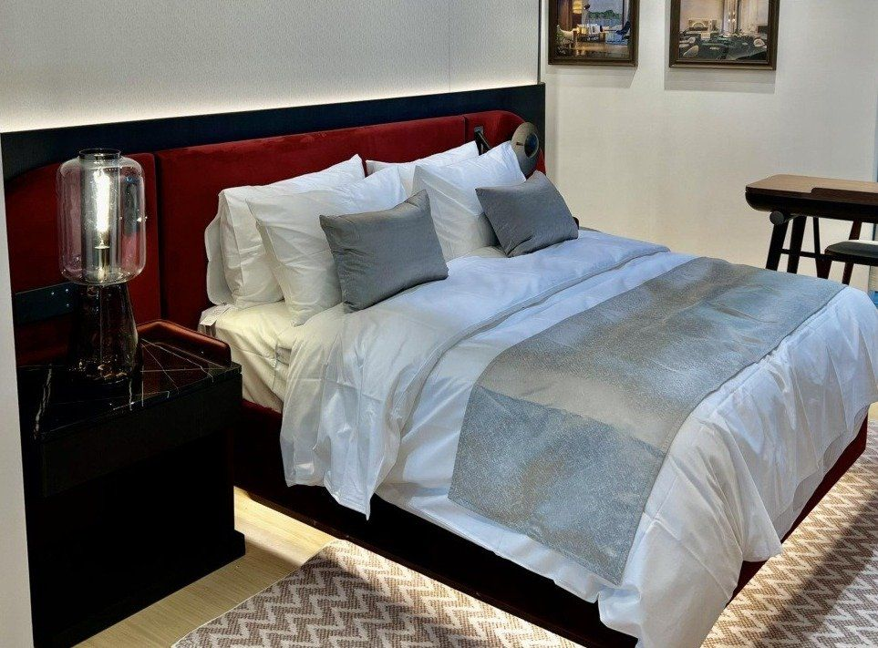
Habitaciones de hotel
Camas, cabeceras, burós, escritorios y clósets a la medida para cuartos y suites
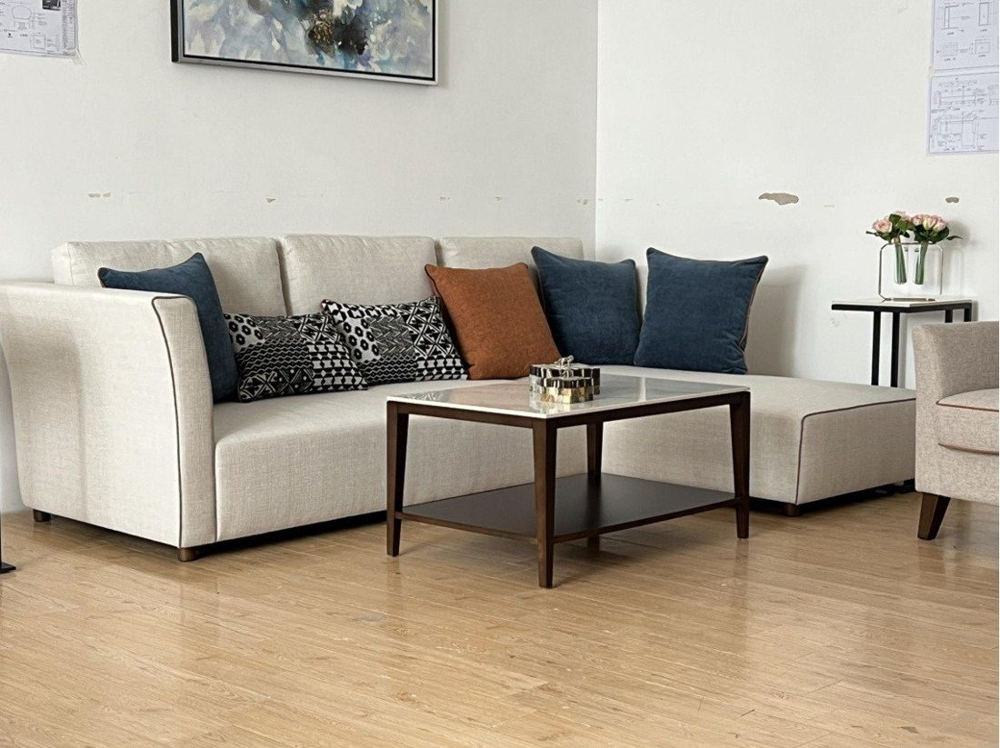
Sofás y salas
Tapicería a la medida para suites, salas de estar y áreas sociales
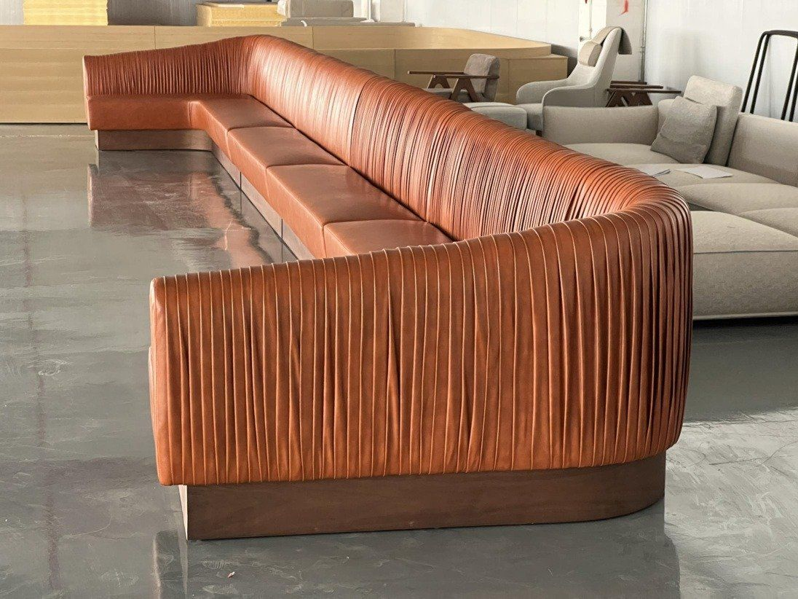
Asientos corridos
Bancas corridas tapizadas en piel para restaurantes, bares y salones
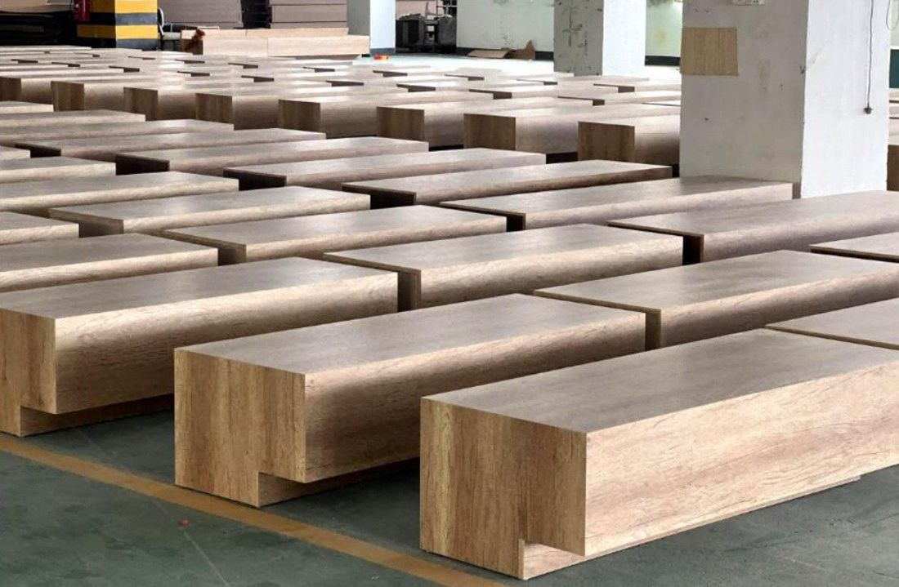
Mueble fijo en serie
Carpintería integrada producida en serie, con aprobación de una muestra antes de fabricar el lote
Otras líneas
- Vestíbulos y áreas públicas. Mobiliario para vestíbulos, restaurantes, bares, salones y salas de juntas
- Biblioteca de materiales. Muestrario en planta de telas, pieles y acabados para elegir los materiales del proyecto
Proyectos de referencia
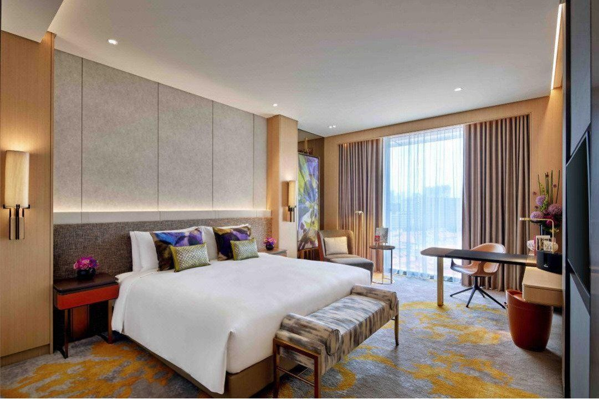
Sofitel Singapore City Centre Singapur
Regent Hong Kong Hong Kong, China
Marriott Hotel IMPZ Dubái, Emiratos Árabes Unidos
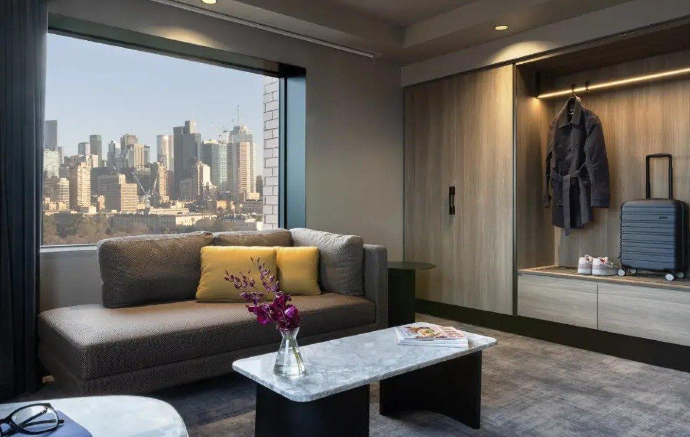
Pullman Melbourne on the Park Melbourne, Australia
Otros proyectos
- St. Regis Goa Resort Goa, India
- Hyatt Regency Nairobi Westlands Nairobi, Kenia
- Mövenpick Anwar Al Madinah Medina, Arabia Saudita
- JW Marriott Shanghai Shanghái, China
Fuentes
- Catálogo corporativo YABO, p. 6
- Catálogo corporativo YABO, pp. 41 y 55
- Catálogo corporativo YABO, p. 158
- Catálogo corporativo YABO, pp. 4, 5, 7, 10, 12, 13, 22, 25, 28, 34, 40, 84, 87, 113, 115 y 144
- Video corporativo YABO
- www.sdyabo.com
- www.sdyabo.com
- www.sdyabo.com
- www.sdyabo.com
- www.sdyabo.com
- www.sdyabo.com
- www.sdyabo.com
- tophotel.news
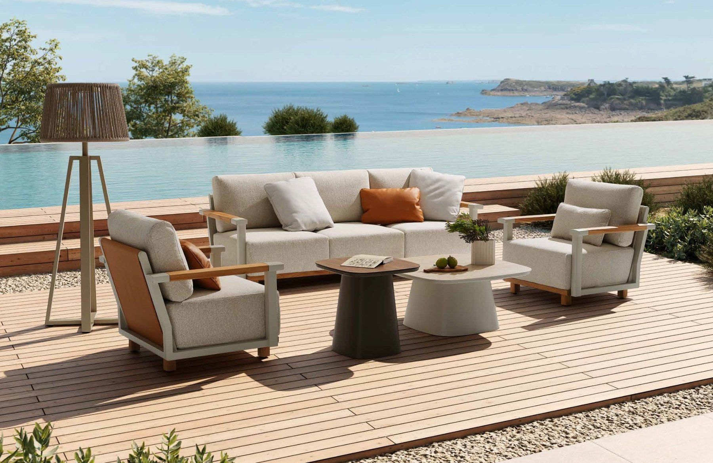
Alma
Mobiliario exterior para hotelería y proyectos
Diseño de autor y producción a escala hotelera para exteriores: Kundesign y Mondecasa
Alma Contract Singapore (Alma Sanctura) es un proveedor de mobiliario para proyectos con sede en Singapur, dueño de la marca Mondecasa y socio de Kundesign. Mondecasa nació a mediados de los 90 como fábrica de mimbre de resina; Kundesign es una firma de diseño exterior de Guangzhou fundada por el diseñador Kun Qi. Para hoteles, clubes y residencias en México reúne salas, comedores, camastros y cabañas probados en hoteles de Asia y Europa.
Fortalezas
- Clientes de Alma en Singapur: Marina Bay Sands, Resorts World Sentosa, Shangri-La, Hilton y Marriott
- Kundesign suma 18 tiendas y agentes exclusivos fuera de China y 10 tiendas exclusivas en China
- Kundesign: AADA 2026, reconocimiento NYCxDesign 2018 e Iconic Awards del German Design Council
- Kundesign exhibe en Salone del Mobile.Milano, Maison&Objet París e ICFF Nueva York
- Mondecasa fabrica bajo marca privada muebles de interior y exterior para marcas europeas
Productos destacados
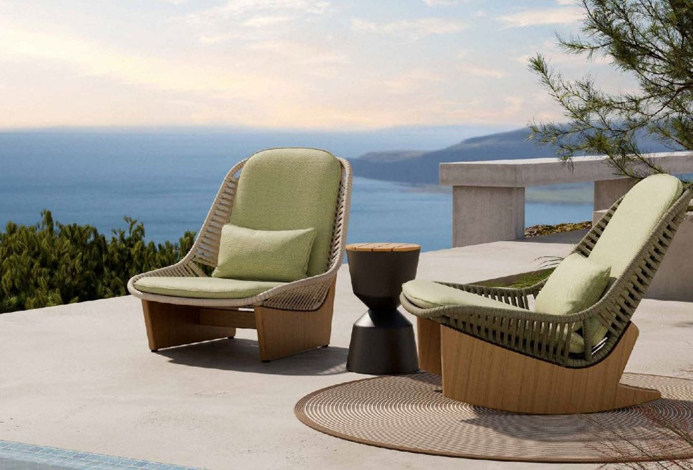
CLOGS (Kundesign)
Sillón y mecedora de aluminio acabado teca, con cuerda de PVC tejida y cojines de tela exterior
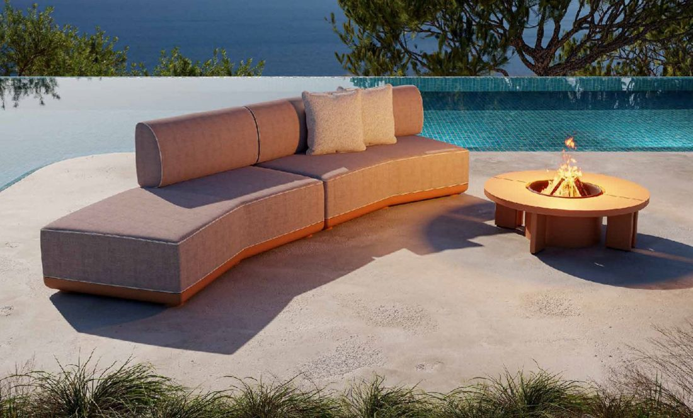
BLOCK (Kundesign)
Sofá modular de estructura dividida, con módulos de esquina, centrales y en arco para terrazas y albercas
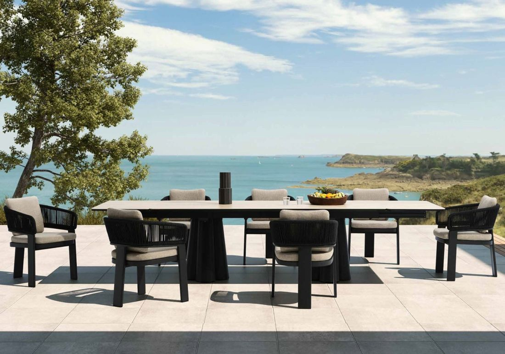
CAYENNE (Mondecasa)
Sillas de aluminio con cuerda tejida y mesa extensible con cubierta cerámica
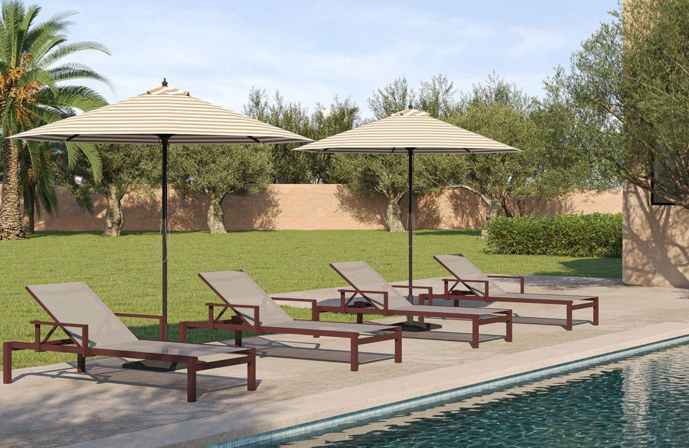
SUNLOUNGER (Mondecasa)
Camastro Mondecasa de aluminio con asiento reclinable de tela tensada para albercas de hotel y club
SAMUI (Mondecasa)
Cabaña de aluminio con cortinas y camastro doble para hoteles, clubes de playa y albercas
Otras líneas
- RIO (Mondecasa). Sala de aluminio con brazos acabado madera y tapizado exterior: sofá, sillones y mesas
Proyectos de referencia
Proyectos publicados por la marca
- Four Seasons Hotel Bangkok (Kundesign) Bangkok, Tailandia
- Capella Bangkok (Kundesign) Bangkok, Tailandia
- Kimpton Los Monteros Marbella (Kundesign) Málaga, España
- Parkroyal Suites Bangkok (Kundesign) Bangkok, Tailandia
- Microsoft (Kundesign) Suzhou, China
- Arden (Kundesign) Singapur
Fuentes
- Catálogo Kundesign 2025, pp. 1–9, 44 y 127–160
- Catálogo Mondecasa 2025, pp. 1–2, 12, 31, 129 y 165
- www.almasanctura.com
- www.mondecasa.com.sg
- www.mondecasa.com
- www.kundesign.com
- www.kundesign.com
- www.kundesign.com
- www.kundesign.com
Pisos y recubrimientos
Parador
Pisos y paneles de interior
Pisos de fabricación alemana y austriaca desde 1977
Parador GmbH fabrica pisos y paneles de muro y plafón en dos plantas propias: Coesfeld, Alemania, y Güssing, Austria, donde se produce la madera de ingeniería. Desde 2018 es subsidiaria al 100% de HIL Limited, hoy BirlaNu, del CK Birla Group de la India. Su portafolio integral reúne madera de ingeniería, laminado, vinil LVT, Modular ONE y paneles decorativos.
Fortalezas
- ProAir: premio a la Innovación de Producto del Año 2007 (Flooring Industry Award) y premio Eurodecor.
- Producción neutra en CO₂ desde finales de 2025, con compensación mediante reforestación certificada en Francia.
- Madera de ingeniería a la medida en pedidos de más de 280 m² (3,000 ft²).
- Premios Red Dot 2016, iF Gold 2013 y TOP 100 Innovator 2022; colección Krystal diseñada con Zaha Hadid.
- Firmante del Pacto Mundial de la ONU desde agosto de 2024.
Productos destacados
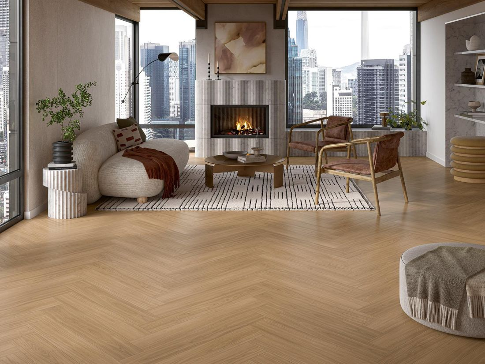
Madera de ingeniería
Parquet multicapa hecho en Güssing: 116 referencias en espiga, espiga húngara, tablón ancho y extra ancho
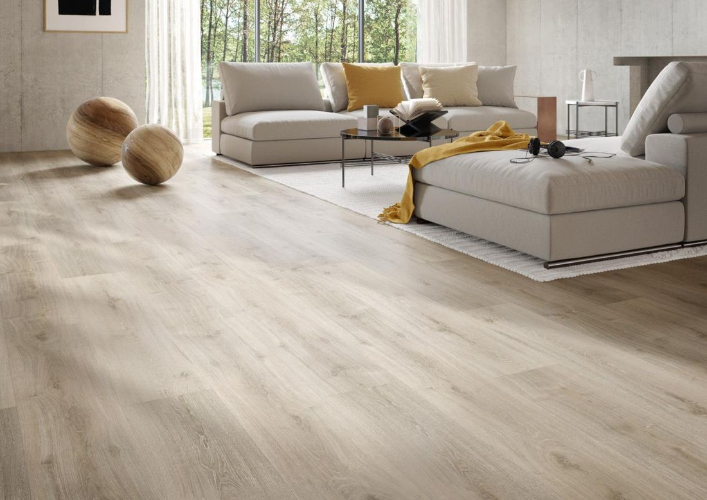
Modular ONE
Sin plastificantes, respaldo de corcho acústico, resiste hasta 100 h de agua estancada; apto para calefacción por piso
Vinil LVT
117 referencias con núcleo HDF, SPC o para pegar; silencioso, cálido y fácil de mantener
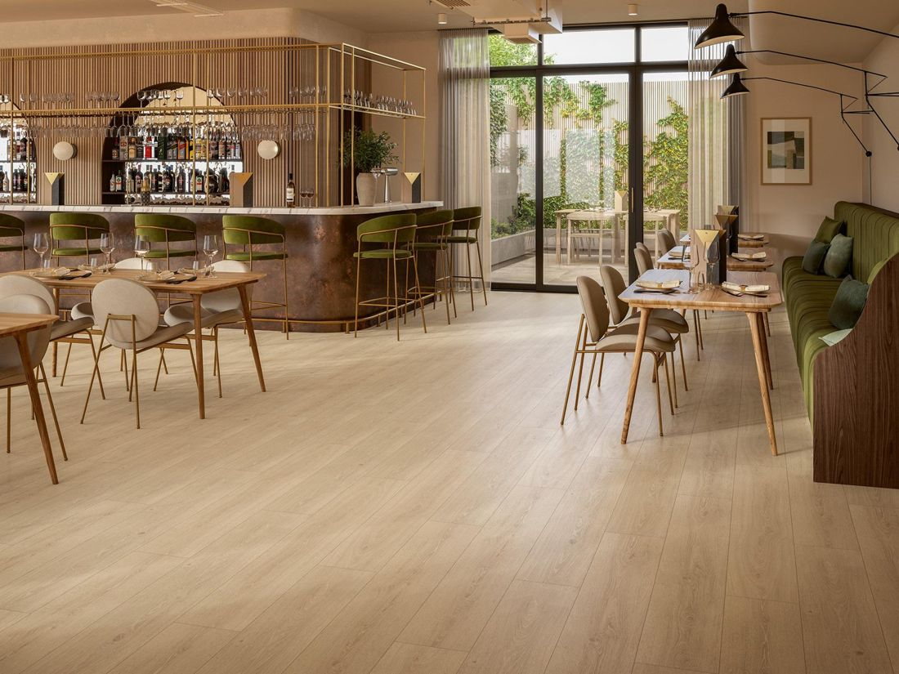
Laminado
120 referencias: espiga, loseta de gran formato, tablón ancho y tablón Chateau
Modular ONE Hydron
Versión 100% a prueba de agua de Modular ONE, pensada para baños y cocinas
Otras líneas
- ClickBoard y paneles. Paneles decorativos para muro y plafón que coordinan con los pisos, más zoclos y perfiles
Fuentes
- Presentación corporativa Parador 2024, p. 6
- Presentación corporativa Parador 2024, p. 8
- Presentación corporativa Parador 2024, p. 9
- Presentación corporativa Parador 2024, p. 10
- Presentación corporativa Parador 2024, p. 15
- Presentación corporativa Parador 2024, p. 16
- Presentación corporativa Parador 2024, p. 18
- Presentación corporativa Parador 2024, p. 19
- Presentación corporativa Parador 2024, p. 20
- Presentación corporativa Parador 2024, p. 21
- Presentación corporativa Parador 2024, p. 23
- Presentación corporativa Parador 2024, p. 25
- parador.de
- www.parador.de
- parador.de
- parador.de
- parador.de
- www.parador.de
- floordaily.net
- interiordaily.com
- kss.unglobalcompact.org
- birlanu.com
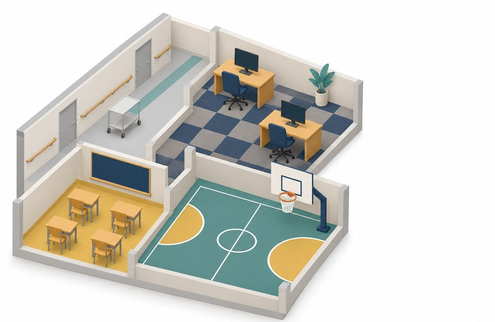
Tarkett
Pisos comerciales y superficies deportivas
Vinil, alfombra, madera y pasto sintético para cada tipo de espacio
Tarkett es un grupo francés con más de 140 años de historia. Fabrica vinil LVT, VCT, pisos homogéneos y de seguridad, alfombra modular, madera, accesorios Johnsonite y, con FieldTurf, pasto sintético y pistas. Desde 2021, tras adquirir Vinylasa, fabrica loseta VCT en la Ciudad de México.
Fortalezas
- Programa ReStart: 129,000 toneladas de piso recolectadas para reciclaje en 29 países
- Pisos sin ftalatos ni formaldehído, con bajas emisiones de compuestos orgánicos volátiles
- Garantía de 5–15 años en sus pisos, según la línea
- Tarkett Sports y GrassMaster equiparon canchas en Seattle, Boston y Atlanta para la Copa Mundial 2026
Productos destacados
Líneas de producto
- Vinil LVT. Losetas y tablones de lujo (iD Inspiration, Ambienta, Aurea Tech SPC) para oficinas, comercios y hoteles
- VCT. Loseta vinílica de composición para tráfico intenso en escuelas, comercios y hospitales
- Vinil homogéneo iQ. Pisos en rollo iQ Optima, iQ Surface e iQ Granit para hospitales y laboratorios; fácil limpieza
- Vinil de seguridad y acústico. Safetred, Granit Safe.T y Ruby 70 Acoustic: pisos antiderrapantes y acústicos para áreas de alto tránsito
- Alfombra modular. Losetas de alfombra (Essence, Grain, Grezzo, Defend) para oficinas corporativas
- FieldTurf y Tarkett Sports. Pasto sintético, pistas de atletismo y pisos deportivos de madera para estadios y canchas
Proyectos de referencia
Proyectos publicados por la marca
- Mercedes-Benz Stadium, superficie FieldTurf CORE (2022) Atlanta, Estados Unidos
- Lumen Field, superficie FieldTurf CORE (2024) Seattle, Estados Unidos
- Aggie Memorial Stadium, New Mexico State University (2023) Las Cruces, Estados Unidos
2TEC2
Pisos de vinil tejido
Vinil tejido belga con aspecto textil para alto tránsito
2TEC2 es la marca de pisos de vinil tejido de Le Tissage S.A., empresa belga de la familia Dewitte-Hanet con sede en Mouscron, también dueña de las marcas Limited Edition y Cocono. Desde 2005 diseña y produce colecciones en loseta, rollo, duela y formatos especiales de la línea Play. Une el aspecto de una alfombra con la limpieza y resistencia de un piso duro, ideal para oficinas, hoteles, clínicas y tiendas.
Fortalezas
- En oficinas lo eligieron Moët Hennessy, Microsoft, Porsche, Freshfields, ING y McDonald's
- En hotelería: Four Seasons George V (París), JW Marriott, RIU, Accor y Wyndham
- Instalado en la New York Public Library, el aeropuerto de Narita y Selfridges
- Hilo, tejido, respaldo y corte en planta propia belga; 74% de energía renovable
Productos destacados
Hybrid
Colección biobasada de 20 tonos naturales, de verdes y azules a ocres; loseta y rollo
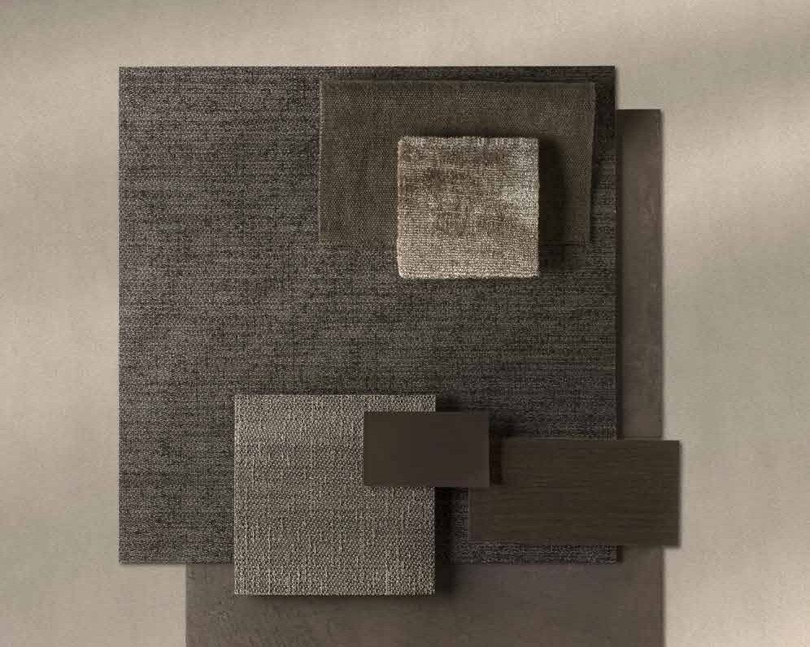
Infinite
16 tonos inspirados en el cosmos, como Coffee Bean y Black Hole; loseta y rollo
Strata
Estratos de roca en loseta 50 × 50 cm o duela 20 × 75 cm; colección biobasada
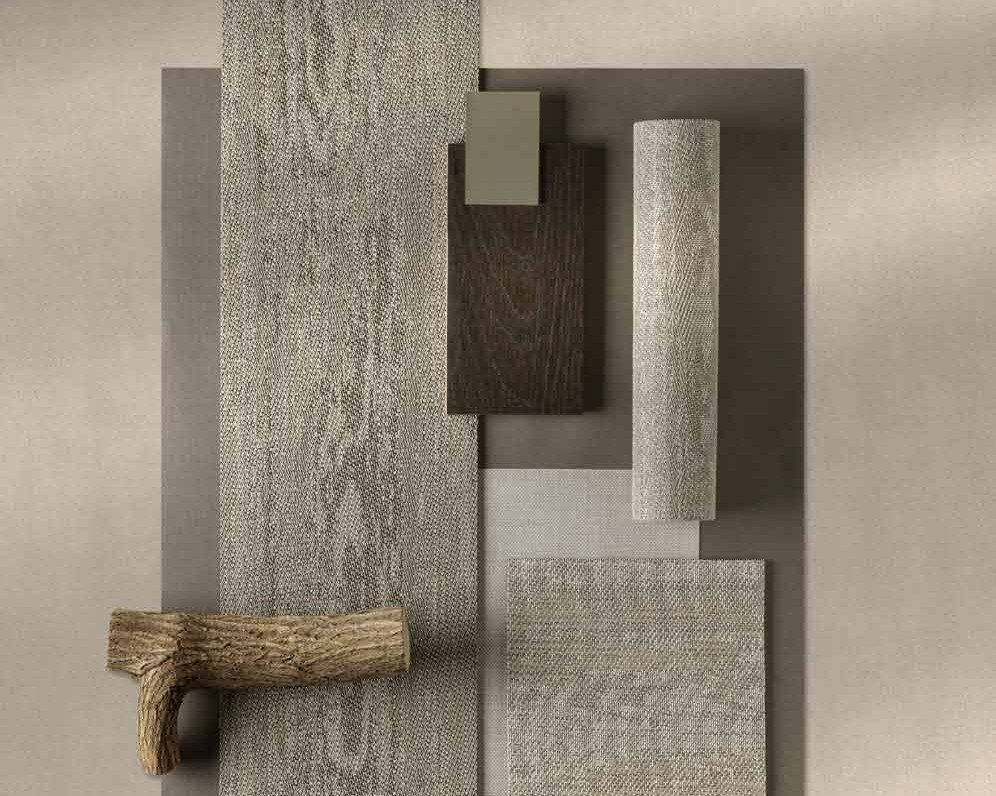
Silva
Textura de madera en duela 20 × 75 cm, para instalar en espiga o escalonada; seis tonos
Marble
Vetas de mármol Carrara, Emperador y Fior en loseta 50 × 50 cm y rollo
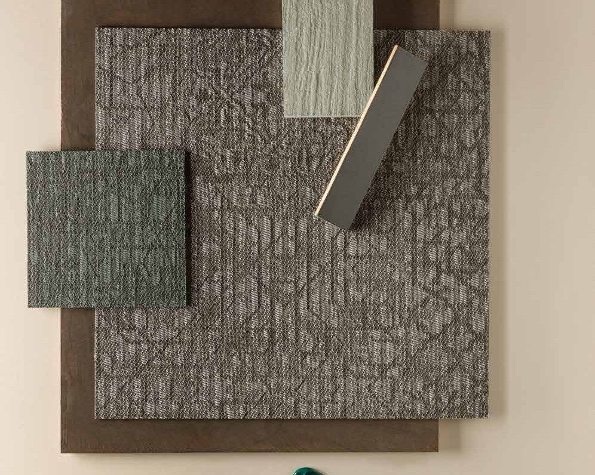
Alhambra
Mosaico de inspiración morisca en 10 colores; colección biobasada en loseta y rollo
Proyectos de referencia
Arts Korea Lab (Hybrid Magellan) Corea del Sur
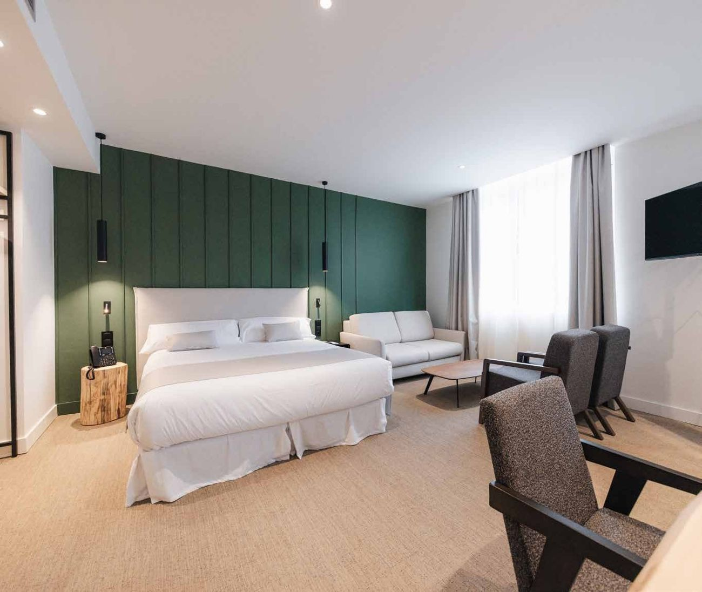
Mondragon Hotel (Infinite Coffee Bean) España
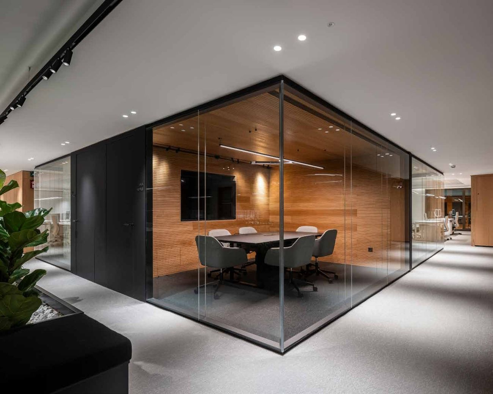
Caja Rural del Sur (Infinite Comet y Black Hole) España
Sensabell Clinic (Hybrid Helios) España
Otros proyectos
- New York Public Library (Cracked Earth Arid) Nueva York, Estados Unidos
- Aeropuerto de Narita (Hybrid y Colourful) Tokio, Japón
Fuentes
- Catálogo de marca 2TEC2 2025, p. 4
- Catálogo de marca 2TEC2 2025, pp. 6–11
- Catálogo de marca 2TEC2 2025, pp. 14–16
- Catálogo de marca 2TEC2 2025, pp. 18–29
- Catálogo de marca 2TEC2 2025, pp. 33–61
- Catálogo de marca 2TEC2 2025, p. 67
- Folleto de sostenibilidad 2TEC2, pp. 12–13
- Folleto de sostenibilidad 2TEC2, pp. 24–30
- www.2tec2.com
- www.2tec2.com
- www.2tec2.com
- www.2tec2.com
- www.2tec2.com
- www.2tec2.com
- www.2tec2.com
- files.2tec2.com
- files.2tec2.com
- files.2tec2.com
- files.2tec2.com
- files.2tec2.com
- www.companyweb.be
Dongpeng
Porcelanato, recubrimientos y baño
Porcelanato de gran formato y muebles de baño con capacidad industrial
Dongpeng es uno de los mayores grupos cerámicos de China: nació en 1972 en Foshan y cotiza en la Bolsa de Shenzhen (003012). En 2025 vendió 6,062 millones de yuanes. Fabrica porcelanato, placas de gran formato, muebles y sanitarios para baño, y piedra ecológica (eco-stone). En México ya tiene obras de referencia como el Aeropuerto de Cancún.
Fortalezas
- Proveedor oficial de recubrimientos cerámicos de los Juegos Olímpicos de Invierno de Beijing 2022
- 7 plantas en China y más de 40 líneas de producción
- Primer fabricante chino de recubrimiento cerámico en unirse al Pacto Mundial de la ONU (2023)
- Calificación Wind ESG AA (la más alta del sector) e inclusión en S&P Global Sustainability Yearbook
- London Design Award Gold y MUSE Silver por la serie IW Brick and Tile Poetry
Productos destacados
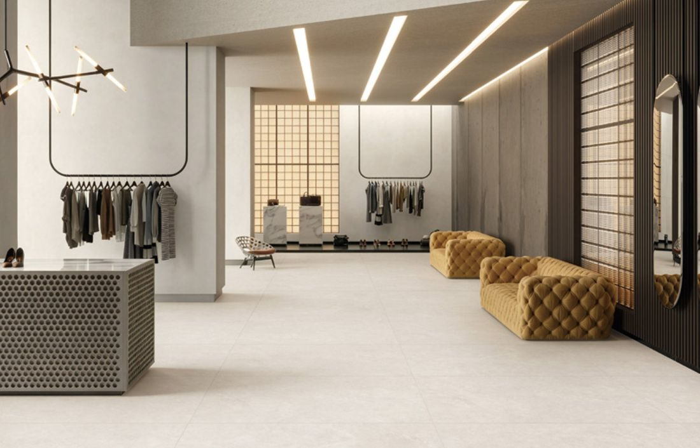
Tipo mármol
Porcelanato tipo mármol en acabado mate, pulido y lappato para pisos y muros
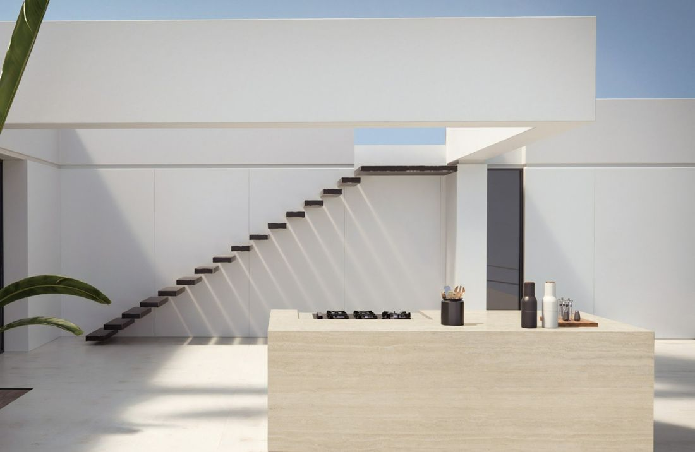
Eterna
Placas con apariencia de piedra hasta 1,600 × 3,200 mm para pisos, muros y cubiertas
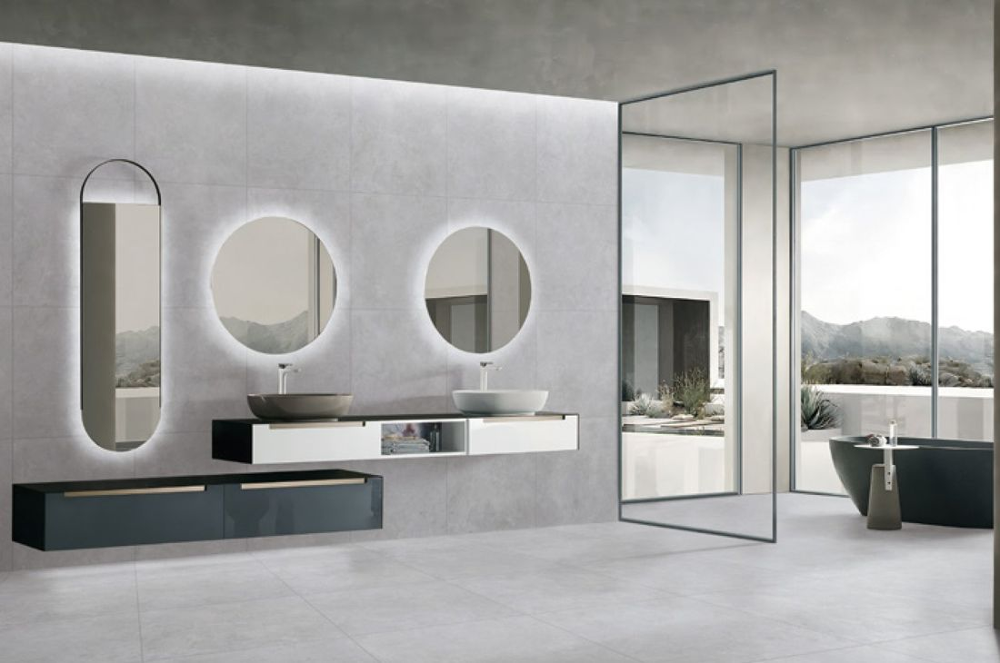
Tipo concreto
Porcelanato tipo concreto de 600 × 600 mm en acabado mate o apomazado
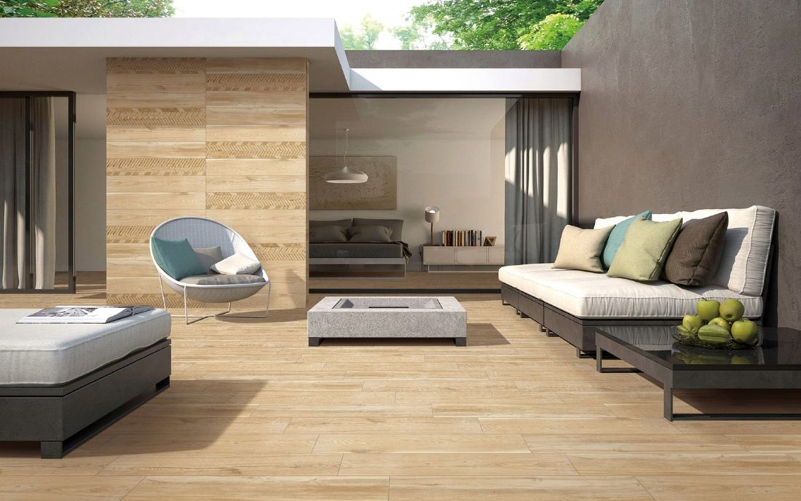
Tipo madera
Porcelanato tipo madera en tablones de 196 × 1,200 mm, acabado mate
Otras líneas
- Baño Dongpeng. Inodoros, inodoros inteligentes y muebles de baño de sus plantas en Jiangxi y Jiangmen
- Eco-stone. Piedra ecológica sin horno, hecha con residuos industriales, para fachadas y espacios públicos
Proyectos de referencia
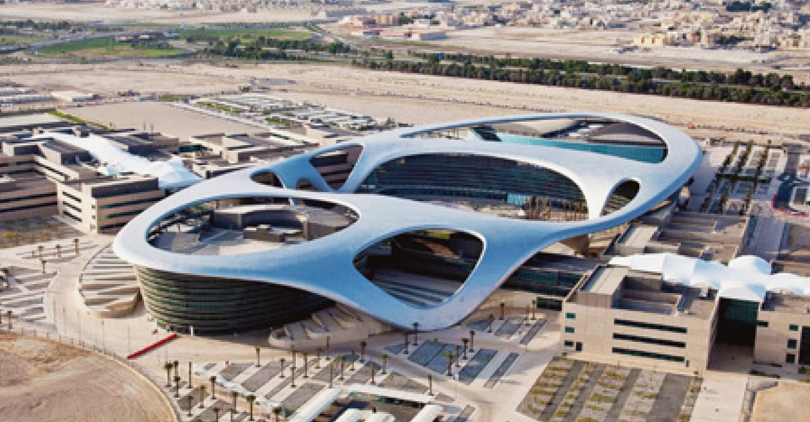
Zayed University Abu Dabi, Emiratos Árabes Unidos
Aeropuerto Internacional de Cancún Cancún, México
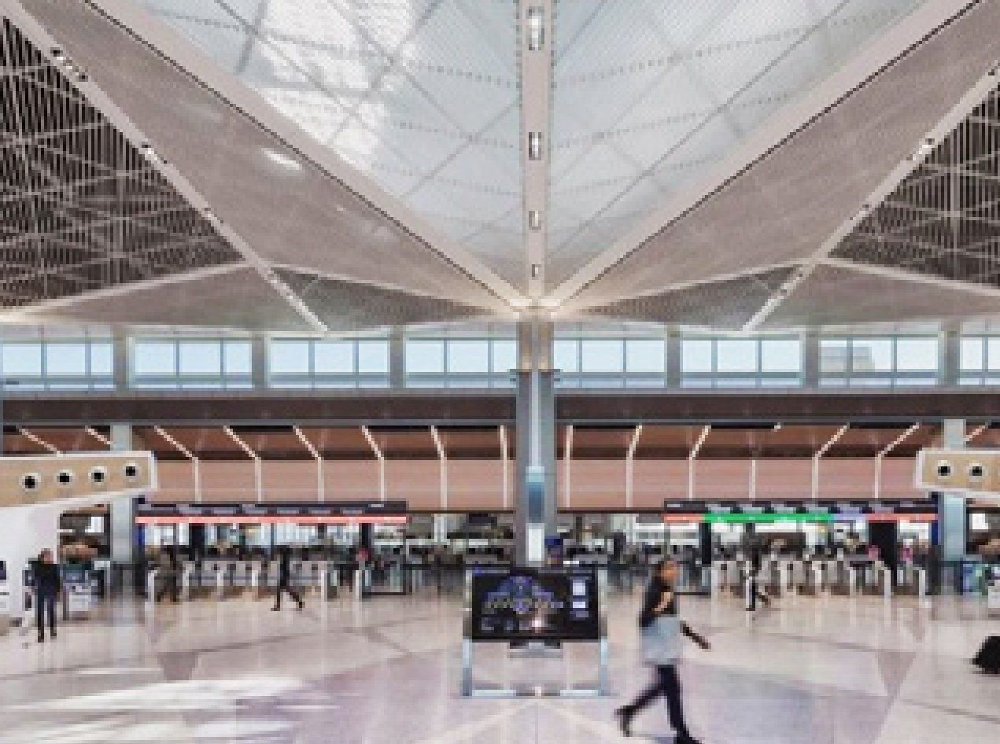
Aeropuerto Internacional de Vancouver Vancouver, Canadá
Otros proyectos
- Aeropuerto Internacional Beijing Daxing Beijing, China
- Edificio Tencent Beijing (50,000 m²) Beijing, China
Fuentes
- Catálogo Dongpeng, pp. 1–6
- Catálogo Dongpeng, pp. 9–11 (productos)
- Catálogo Dongpeng, pp. 17 y 21 (Marble, Eterna)
- Catálogo Dongpeng, pp. 40–41 y 52 (Concrete, Wood)
- Catálogo Dongpeng, pp. 76–78 (Decor)
- Catálogo Dongpeng, pp. 85–91 (proyectos)
- Catálogo Dongpeng, p. 96
- www.dongpeng.net
- www.dongpeng.net
- www.dongpeng.net
- www.dongpeng.net
- www.dongpeng.net
- www.dongpeng.net
- disc.static.szse.cn
Fachadas y exteriores
MexyTech
Materiales WPC para exterior e interior
Sustitutos de madera WPC para deck, fachada y cerca
Foshan MexyTech fabrica desde 2009 materiales compuestos de madera y plástico (WPC) para exterior e interior. Produce en sus plantas de Nansha y Yunfu, en Guangdong. Su portafolio cubre decks coextruidos, cercas, portones, fachadas, pérgolas, pedestales y pisos SPC. El diseño de producto lo dirige un doctor en polímeros con 20 años de experiencia, y la empresa trabaja con tecnología alemana desde 2014.
Fortalezas
- Capacidad de producción de más de 2,100 contenedores al año
- Seis inspectores de calidad por turno y pruebas de más de 80 h de niebla salina, congelación y rayos UV
- Laboratorio con la South China University of Technology desde 2012; cercas Mecofence patentadas
- Más de 100 proyectos emblemáticos en el mundo, entre ellos Macau Tower Plaza y Genting Hotel
- Productos regulares en inventario, sin pedido mínimo
Productos destacados
Deck coextruido WPC
Deck con capa protectora de polímero para terrazas, albercas y muelles
Cercas y portones WPC
Cercas modulares de privacidad, celosía o tablillas; portones sencillos de 0.9 m y dobles de hasta 3 m
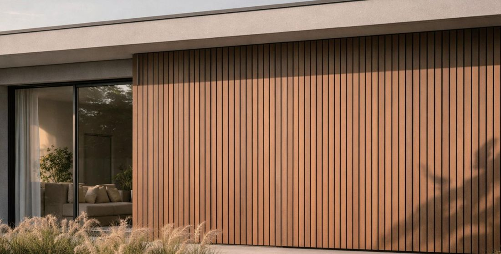
NovAScend ASA Wall Cladding
Revestimiento de fachada coextruido con capa ASA; resistente a la intemperie, duro y ligero
Alumverde
Revestimiento de aluminio no combustible con apariencia de madera natural
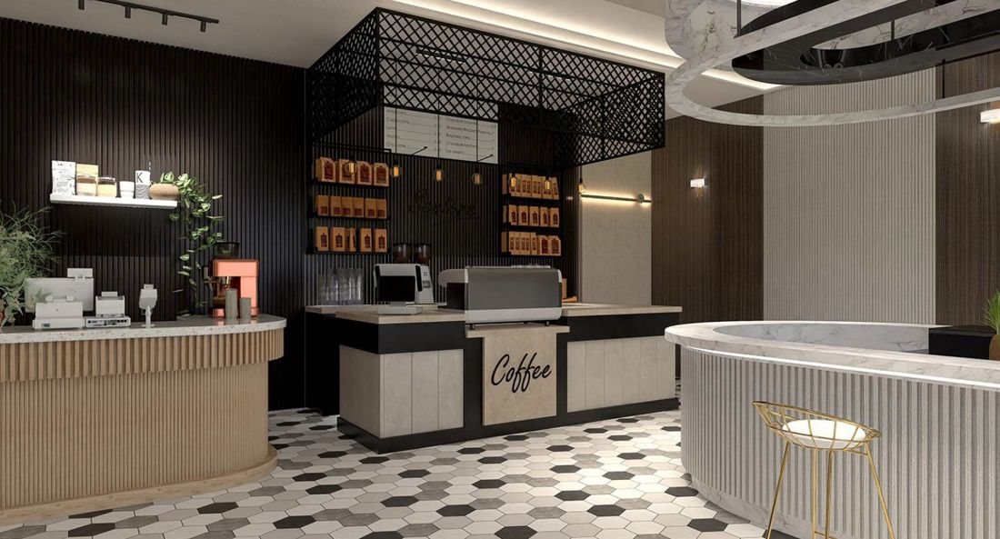
WPC Indoor Living
Paneles murales, acústicos, plafones y pisos SPC para interiores
Otras líneas
- Pedestal MexyBase. Pedestal ajustable patentado de 60–1,200 mm de altura; soporta más de 2.5 t/m²
Proyectos de referencia
Proyectos publicados por la marca
- Macau Tower Plaza Macao, China
- Genting Hotel Malasia
- Wedding Party Club, deck Suprotect de 1,500 m² Budapest, Hungría
- Deck ignífugo para zoológico, 560 m² Singapur
- Villa con deck sin juntas, 1,000 m² Dubái, Emiratos Árabes Unidos
- Jardín con piso WPC y pérgola, 150 m² Costa Rica
Fuentes
- Catálogo MexyTech Indoor Living, pp. 1–2
- Catálogo MexyTech 2025, pp. 1, 2, 9, 10 y 15
- Catálogo NovAScend ASA 2026, pp. 1, 3 y 14
- Catálogo Alumverde 2025, pp. 2 y 12
- www.mexytech.com
- www.mexytech.com
- www.mexytech.com
- www.mexytech.com
- www.mexytech.com
- www.mexytech.com
- www.mexytech.com
- www.mexytech.com
- www.mexytech.com
- www.sourceready.com
Acústica
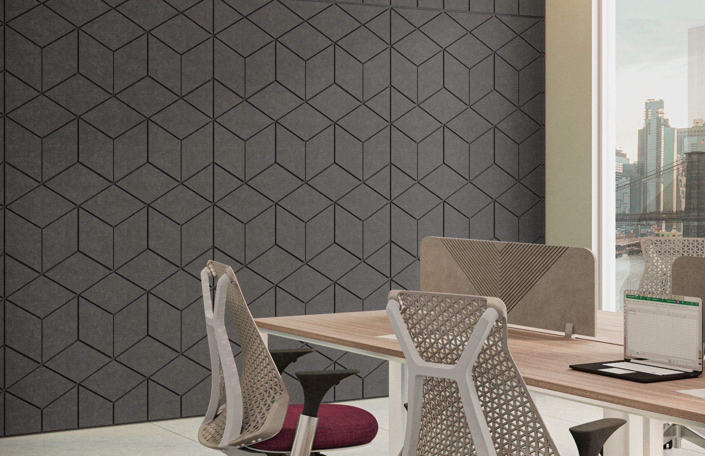
Sonara
Paneles acústicos y decorativos
Paneles acústicos en 16 colores y cortes a la medida
Sonara nació en 2021 como la marca de paneles acústicos de Techno (Technochairs, S.A. de C.V.), grupo de Escobedo, Nuevo León, con más de 35 años en mobiliario de oficina. Comercializa paneles para muros, plafones y divisiones. Para proyectos en México ofrece amplio inventario y asesoría técnica directa.
Fortalezas
- CEDIS del grupo con 20,000 m² de almacenamiento
- Fibra 100% poliéster sin aglutinantes químicos, formaldehído ni químicos de la Lista Roja
- Conductividad térmica de 0.036 W/(m·K) y resistencia térmica de 0.599 (m²·K)/W
- Hoja estándar de 1,220 × 2,440 × 9 mm, con gramaje de 1,500 g/m²
- Expositor en Expo Mueble Internacional Guadalajara 2022–2024 y Obra Blanca CDMX 2025–2026
Productos destacados
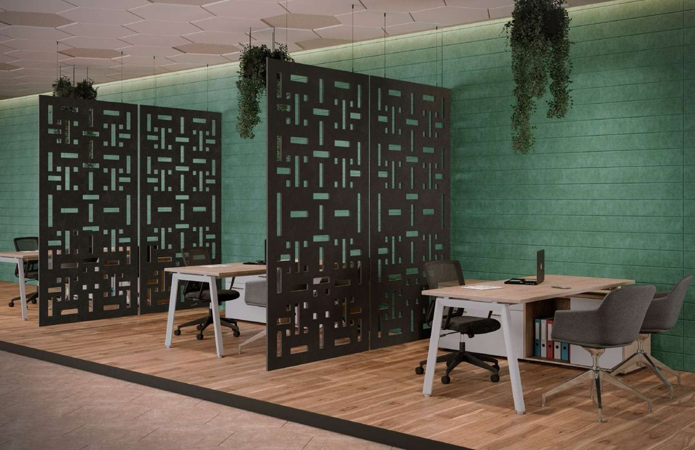
Corte Celosía
Paneles calados para colgar como divisor o adherir a muro; 28 modelos (SCC001–SCC028)
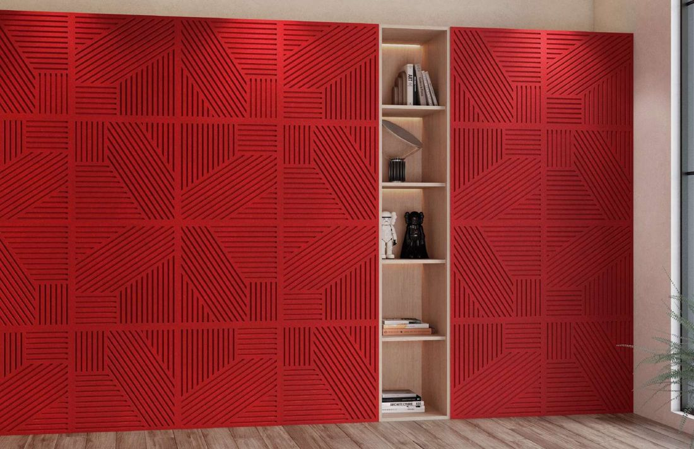
Corte V y Corte U
Ranurados en V (14 modelos) y en U invertida (31 más 14 modulares), acabado recto o curvo
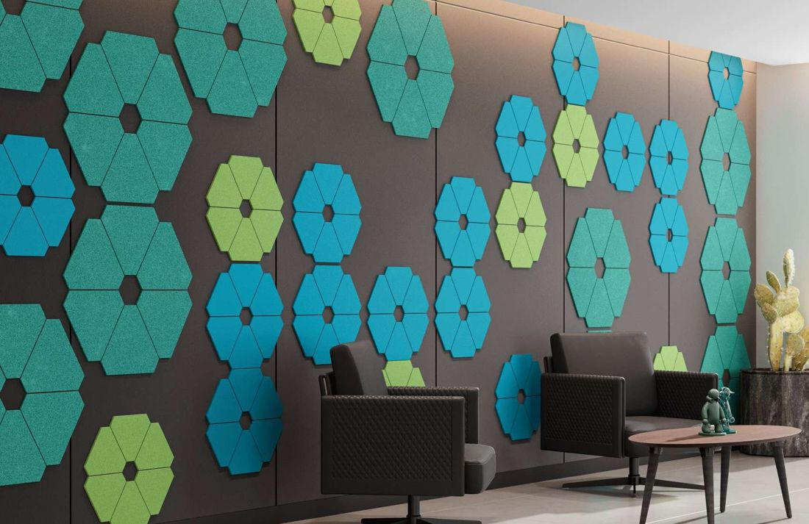
Sonara Shapes
Círculo, cuadrado, rectángulo, triángulo y hexágono en tamaños de 30–120 cm para composiciones libres
Panel Suspendido
Deflectores y nubes colgantes para plafón en módulos de 1.20 y 2.40 m, con herrajes propios
Sonara Mamparas
Divisores de escritorio de 1.10–1.50 m de largo; 10 variantes para privacidad y menos ruido
Sonara Print
Panel acústico impreso con maderas, piedras, textiles y patrones, o diseño propio del proyecto
Vidrio y energía solar
KM Group
Vidrio arquitectónico y vidrio solar BIPV
Fachadas, ventanería y vidrio que genera electricidad
KM Group es un grupo vidriero de Foshan, Guangdong, que reúne tres empresas: Zhanwo Glass, de vidrio arquitectónico; Zhanyue, de puertas y ventanas, y SIG Solar, de vidrio fotovoltaico integrado al edificio (BIPV) de telururo de cadmio (CdTe). Para obras en México cubre el vidrio arquitectónico, la ventanería y el vidrio fotovoltaico.
Fortalezas
- Más de 40 equipos: corte automático, chorro de agua y hornos de templado plano y curvo
- Líneas propias de laminado, insulado y esmaltado cerámico en la planta de Zhanwo
- Soluciones BIPV para estacionamientos, paradas de autobús, casetas de vigilancia y terrazas
- Zhanwo exporta a Tailandia, Malasia, Filipinas, Camboya y Bahamas
Productos destacados
Muro cortina solar CdTe
Fachada de vidrio fotovoltaico que genera electricidad y deja pasar luz natural; vida útil de hasta 25 años
Domo solar BIPV
Cubierta de vidrio solar con 20–40% de transmitancia y cableado oculto
Barandal BIPV
Barandal de vidrio solar con caja de conexión y cableado ocultos
Tragaluz BIPV
Tragaluz de vidrio CdTe que genera energía y filtra la luz del día
Vidrio arquitectónico y de seguridad
Templado, laminado, insulado, Low-E, blindado, resistente al fuego y curvo, procesado por Zhanwo
Otras líneas
- Puertas y ventanas de aluminio. Perfiles, puertas, ventanas y herrajes de aluminio con vidrio templado
Proyectos de referencia
Nanjing Talent Apartments Nanjing, China
Qingdao Telaidian Qingdao, China
Shujutongniu Digital Data Centre Beijing, China
558 Nanjing Road Shanghái, China
Otros proyectos
- Centro Internacional de Convenciones y Exposiciones Hengqin Zhuhai, China
- Universidad Médica de Guangzhou Guangzhou, China
Fuentes
- Catálogo KM Group, pp. 3–6, 8–10, 12–15 y 19
- Casos de proyecto KM Group, pp. 1–4
- Catálogo Solarglass 2026, pp. 1–3
- Imagen de portada proporcionada por la marca
- www.glass.com.cn
- www.buildmost.com
- www.glass.com.cn
Jia Mao
Vidrio y materiales fotovoltaicos BIPV
Vidrio solar a la medida para fachadas, tragaluces y cubiertas
Shanghai Jiamao New Energy Technology, que opera como Jia Mao BIPV, fabrica en una planta automatizada vidrio fotovoltaico integrado al edificio (BIPV) y otros materiales solares que sustituyen el acabado tradicional: vidrio transparente, de color e imitación piedra, barandales, tejas y pisos que generan electricidad. Así, la envolvente cumple su función arquitectónica y además produce energía.
Fortalezas
- Retención de color garantizada hasta por 30 años en el vidrio solar de color
- Cinco proyectos publicados en China: comercial, industrial, residencial y agrícola
- Productos con certificación TÜV, IEC y CE (según el fabricante)
- Vidrio transparente probado a 5,400 Pa de viento, apto para edificios de hasta 300 m
- Pedido mínimo de 500 m²; fabricación en 15–20 días (estándar) o 20–30 (a la medida)
Productos destacados
Vidrio solar imitación piedra
Acabado imitación piedra o ladrillo sobre celdas solares para fachadas y muros que generan energía
Vidrio solar de color
Color a la medida (ΔE<2), celdas HJT; piezas de 400–2,000 × 1,000–4,000 mm, curvas o triangulares
Vidrio solar transparente
Para fachadas, tragaluces y muros cortina; transparencia a la medida y hasta 200 W/m²
Otras líneas
- Barandales y marquesinas solares. Barandales de balcón y marquesinas de vidrio fotovoltaico translúcido que además generan energía
- Tejas solares. Sustituyen la teja tradicional y generan electricidad; eficiencia de módulo de 20.5% o más
- Pisos fotovoltaicos. Losetas transitables IP68 con resistencia a compresión de 50 MPa o más para plazas y andadores
Proyectos de referencia
Proyectos publicados por la marca
- Centro de Exposiciones de Ciencia y Tecnología de Wuhan (1.2 MW, 9,600 m² de fachada y tragaluces) Wuhan, China
- Edificio comercial Mountain City (5 MW, 38,000 m²) Chongqing, China
- Naves industriales Xuancheng (3.5 MW en techo, 28,000 m²) Xuancheng, China
- Conjunto de 60 villas Jiazhou con tejas solares (2 MW) Guangzhou, China
- Base de cultivo de hortalizas Shouguang, 25 invernaderos de vidrio solar (500 kW) Shouguang, China
Fuentes
- Manual de producto BIPV Building Curtain Wall Solar Power Glass, pp. 4, 6–13 y 18
- jmbipvtech.com
- jmbipvtech.com
- jmbipvtech.com
- jmbipvtech.com
- jmbipvtech.com
- jmbipvtech.com
- jmbipvtech.com
- jmbipvtech.com
- jmbipvtech.com
- jmbipvtech.com
- english.beijing.gov.cn
Mobiliti
Mobiliti es una empresa mexicana que representa a fabricantes nacionales e internacionales e importa los productos que se fabrican fuera de México para oficinas, hoteles y vivienda. Su marca principal es Sunon, que comercializa como Sunon by Mobiliti. Mobiliti acompaña cada proyecto con planeación de espacios por sector, selección de producto e importación.
Showrooms
- Showroom Guadalajara
Av. México 2501, Col. Vallarta Norte, C.P. 44690, Guadalajara, Jal.